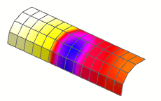

后处理结果(5/6)
查看反光片上的温度。
 仿真导航器
仿真导航器
-
.gif) 替代导热系数下方的结果
替代导热系数下方的结果
 后处理导航器
后处理导航器
-

 替代导热系数 (展开)
替代导热系数 (展开) -
温度—节点的
-
云图绘图 (展开)
-
后处理视图 5 (展开)
-
2D 单元 (展开)
-
 2D 单元 (取消选中)
2D 单元 (取消选中)
-
 reflector mesh (选中)
reflector mesh (选中)
